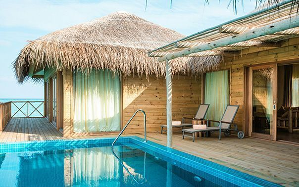
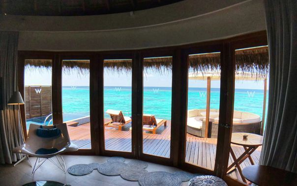
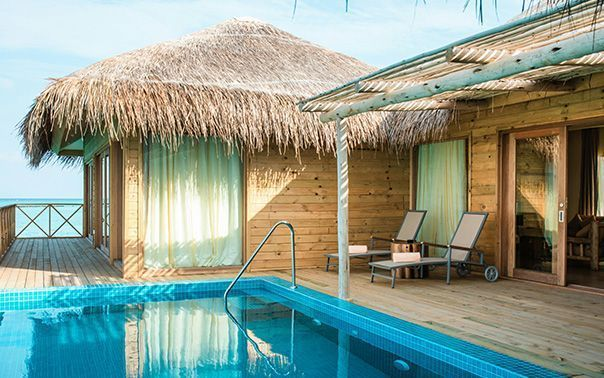
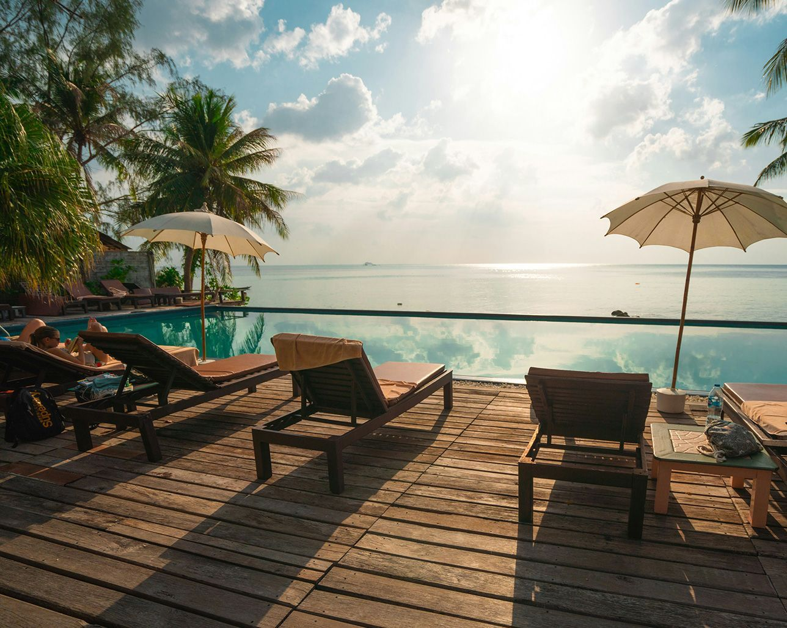

白い石灰岩の地形と透明度の高い海に囲まれた沖永良部島。その自然に溶け込むように設計した低層ヴィラが、 到着した瞬間から島の静けさへと気持ちを切り替えます。ロビーから客室、ガーデン、レストランまで、 どこにいても風と光を感じられる導線を大切にしました。
滞在のテーマは「整える旅」。賑やかな消費ではなく、景色・食・睡眠・入浴の質を丁寧に高めることで、 短い休暇でも身体が軽くなる感覚を目指しています。
Resort Overview
白い石灰岩の地形と透明度の高い海に囲まれた沖永良部島。その自然に溶け込むように設計した低層ヴィラが、 到着した瞬間から島の静けさへと気持ちを切り替えます。ロビーから客室、ガーデン、レストランまで、 どこにいても風と光を感じられる導線を大切にしました。
滞在のテーマは「整える旅」。賑やかな消費ではなく、景色・食・睡眠・入浴の質を丁寧に高めることで、 短い休暇でも身体が軽くなる感覚を目指しています。
Guest Rooms & Villas

FOR COUPLES大きな開口部から朝の光が差し込む、60平米のスタンダードスイート。 寝具、バスアメニティ、ルームサービスまで、記念日滞在を想定した設えです。

FOR FAMILIESお子様連れでも過ごしやすい、芝庭付きの独立型ヴィラ。 リビングと寝室を分け、滞在中の生活リズムにゆとりを持たせています。

FOR LONG STAYS崖上の静けさを独占する最上位カテゴリー。 専用温水プールとバトラーサービスにより、3泊以上の滞在でも心地よく過ごせます。
Facilities
水平線につながるように設計したプールでは、朝の静かな遊泳から夕方のサンセットカクテルまで楽しめます。 小さなお子様向けの浅瀬エリアも併設しています。
月桃、島塩、黒糖オイルなど、南西諸島ならではの素材を使ったトリートメントをご用意。 ペアルームもあり、記念日利用にも好評です。
島野菜、近海魚、奄美群島の発酵文化を取り入れたコースとアラカルト。 朝はやさしい和洋ビュッフェ、夜は予約制のシェフズテーブルも選べます。
POPULAR AMENITIES
Local Experiences

Island Rhythm
朝は潮の香りとともにテラスで深呼吸し、日中は海や洞窟を巡り、夕方はサンセットに合わせてラウンジへ。 観光を詰め込むのではなく、島のリズムに自分を合わせていく過ごし方をご提案しています。
沖永良部島ならではの洞窟地形を、専任ガイドが安全にご案内。 地下水の透明感や静寂を体験できる、非日常性の高い人気プログラムです。
所要時間 約3時間夕凪の時間帯に合わせて出航し、水平線に沈む夕日を船上で鑑賞。 小皿料理とスパークリングワイン付きで、カップル利用にも適しています。
毎日 17:30発ガジュマルの木陰や石垣の路地を歩きながら、島の暮らしに触れるガイドウォーク。 朝食前の軽い運動としても心地よいコースです。
宿泊者無料 / 予約制Guest Trust
「客室から見える海の色が時間ごとに変わり、何もしない贅沢をしっかり味わえました。 スタッフの距離感も心地よく、家族旅行でも落ち着いて過ごせました。」
「食事の満足度が高く、島の食材を丁寧に楽しめたのが印象的でした。 子ども向けの配慮も細かく、また長めの日程で来たいと思える滞在でした。」